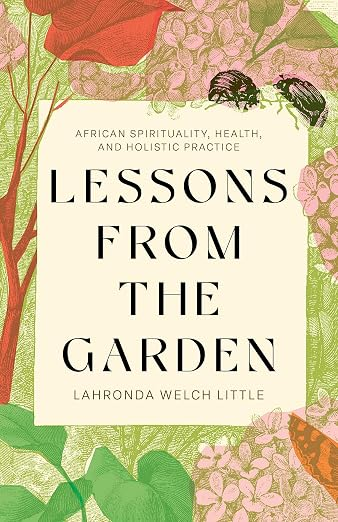
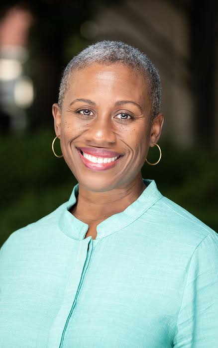

You're registered! Join us November 14 at 4:00 p.m. at STAR Community UMC.
THE CANDLER FOUNDRY × STAR COMMUNITY UMC
REGISTRATION CONFIRMED
We look forward to seeing you.
Thank you for registering for a conversation with Rev. Dr. Lahronda Welch Little about her newly published book, Lessons from the Garden: African Spirituality, Health, and Holistic Practice.


Your event details
Saturday, November 14, 2026 4:00 p.m. EST
STAR Community UMC 5365 Memorial Drive Stone Mountain, GA 30083
In person • Free admission
An afternoon of conversation
Guest panelists include Bishop Robin Dease (Georgia Episcopal Area of The United Methodist Church), Dr. Carolyn McCrary (Interdenominational Theological Center), and Juanita Daily.
A series of interviews with the author will be followed by a light reception.